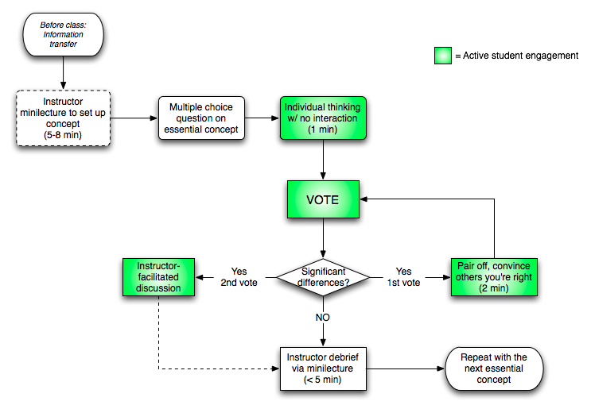

Students at the Center
The Why and the How of Student-Centered, Inquiry-Focused Instruction
Robert Talbert, Grand Valley State University
Twitter: @RobertTalbert / Google+: +RobertTalbert
Lenoir-Rhyne University, 9 January 2015

Outline
Part 1: The Why
Part 2a: The How -- some ideas
Part 2b: The How -- case studies
Part 3: Open question time
Part 1: The Why
Questions and discussion
Please get into groups of 3--4 and make sure everyone in the group knows each other.
For each of the questions, think about the question and possible answers; discuss your answers in the group, and then we'll share responses with the whole group.
A Lenoir-Rhyne University graduate should be __________.
How does a person learn new things?
"The center"
Who is constructing the knowledge?
Whose needs are being addressed?
Which way does the arrow point?
Photo: https://www.flickr.com/photos/infomastern/Choices for the center
Nothing
The instructor
The students
Some evidence from the STEM world
Students in "interactive engagement" sections of intro physics show 2 standard deviation improvement in learning gains over students in standard lecture courses (Hake, 1998)
Large-scale study of Inquiry-Based Learning in mathematics showed statistically significant gains across a variety of learning measures (Laursen et al., 2011)
Several studies on peer instruction indicate signficant improvements in conceptual mastery, problem solving, gender gap (Crouch and Mazur, 2001)
A modest goal: The client-consultant model
Part 2a: The How -- Some Ideas
Peer instruction
The inverted/flipped classroom
Flipped Learning is a pedagogical approach in which direct instruction moves from the group learning space to the individual learning space, and the resulting group space is transformed into a dynamic, interactive learning environment where the educator guides students as they apply concepts and engage creatively in the subject matter.
http://www.flippedlearning.org/definition
The Inverted Classroom Wiki: https://invertedclassroom.wikispaces.com/
Flipped learning in mathematics
Prior to class: Structured reading/viewing activities on new concepts -- play, and ask/answer questions
Arrival at class: Deal with questions that cropped up
During class: Application, analysis, creativity problems
Other big ideas
Team Based Learning: 12-minute video with examples from law, social sciences, and others: http://www.utexas.edu/academic/ctl/largeclasses/#tbl
POGIL: Process Oriented Guided Inquiry Learning (https://pogil.org/)
Service learning
Simple things
Think/pair/share
Simple thing 2
Poster presentations
Part 2b: The How -- Case Studies
Here are some scenarios of instruction. For each one, think about the situation and how instruction might be made more student-centered; discuss your ideas in the group, and then we'll share responses with the whole group.
The interactive lecture that wasn't
Prof. A teaches a lecture course that is one of the largest on campus. In an effort to get students more involved in the lecture, Prof. A splits each 50-minute lecture up into three 10-minute segments followed by a question, asked by Prof. A to the whole class, with 5 minutes of time for Q&A. This is what Prof. A understands to be "interactive lecture". However, students rarely respond to the questions; the students who do respond tend to be the same ones all the time, and not always with intelligent answers. The majority of the students don't interact, and tune out when the question time comes.
Drinking from the fire hose
Prof. B teaches a course that contains a massive amount of material to cover, and it's a prerequisite course for a number of other courses in the major. Prof. B would like to get students more involved in the class meetings, but with the amount of material to cover and with the high stakes of not covering it all, Prof. B is at a loss -- it seems like straight lecture is the only thing that works.
The interactive lecture that wasn't
Prof. C teaches a course, and Prof. C has made a real effort to include group work in the class meetings. Prof. C occasionally breaks from lecture and gives problems pertaining to the course material to students, puts the students in groups, and asks them to work out the problems. The problem is that students don't usually engage with the process. Many of them have their laptops, tablets, and smartphones with them and "use" the group work time to surf the internet or text. Few groups seem to really put forth an effort. Prof. C could go back to lecturing but would rather see the group work succeed.
Part 3: Open question time
Thank you
Robert Talbert, Associate Professor of Mathematics
Grand Valley State University, Allendale, Michigan USA
Twitter: @RobertTalbert
Google+: +RobertTalbert
Blog: http://chronicle.com/blognetwork/castingoutnines
Presentation: roberttalbert.github.io/lenoirrhyne